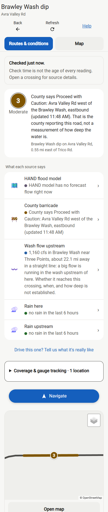

Experimental · historical test case
Brawley: upstream flow is not road depth
This reproduces the reported November 1, 2026, 8:04 PM Arizona case. It is a regression preview, not current road conditions. Other weather inputs are controlled test values.
Loading verified test output…What changed in route ranking
Actual phone screen
Browser screenshots use fixed county and gauge inputs, with external model requests unavailable. They are not a live feed.
Show 390 px phone capture

360 px capture · Browser check results
Open experimental app with current feeds · Full regression evidence